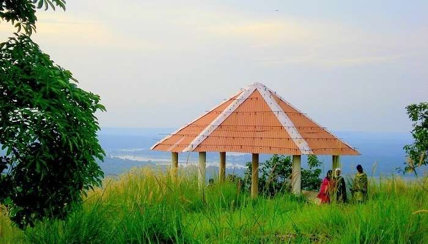
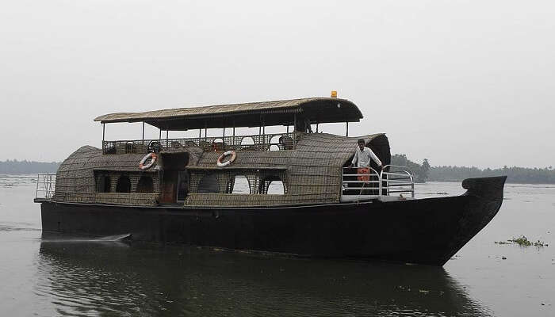
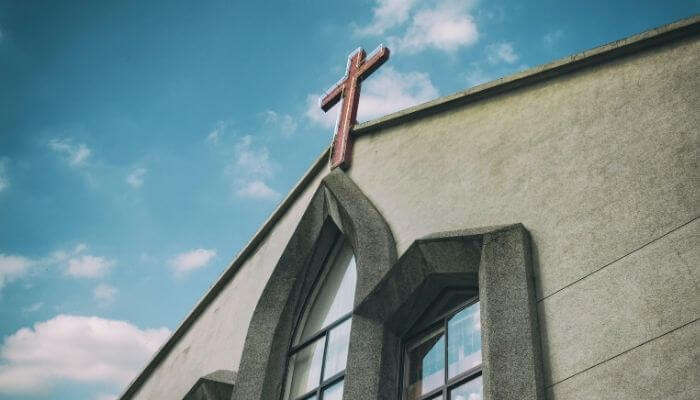

Vadakkunnathan Temple

Athirappilly Waterfalls

Vilangankunnu

Chettuva Backwater

Thrissur is a city in the south Indian state of Kerala. It's known for sacred sites and colorful festivals. In the center is Vadakkumnathan Temple, dedicated to Lord Shiva and adorned with murals. The ornate, Indo-Gothic Our Lady of Dolours Basilica is nearby. To the north, Thiruvambady Temple is home to several elephants. Sakthan Thampuran Palace houses an archaeology museum with bronze statues and ancient coins.Thrissur is known as the cultural capital of Kerala, and the land of Poorams. The district is known for its ancient temples, churches, and mosques. Thrissur Pooram is the most colourful temple festival in Kerala.